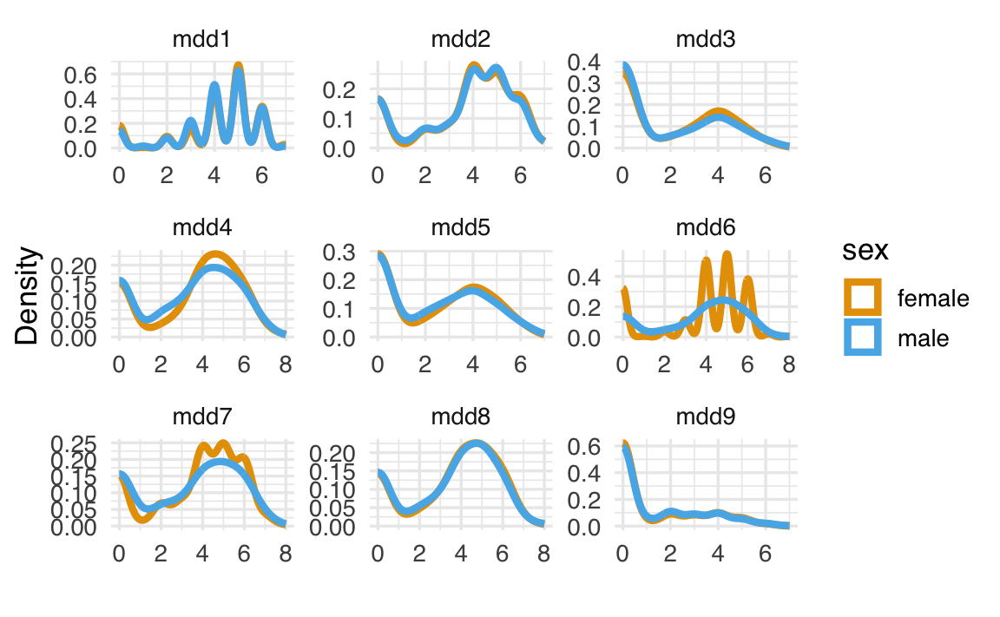

here::here("code", "_common.R") |>
source()
# Load packages
if (!requireNamespace("pacman")) install.packages("pacman")
pacman::p_load(lavaan, semTools)54 Invarianza di misura
In questo capitolo apprenderai come:
- verificare l’invarianza di misura in modelli applicati a variabili continue e categoriali;
- confrontare modelli con vincoli specifici tra gruppi.
Prerequisiti
Preparazione del Notebook
54.1 Introduzione
Nel campo della psicologia, non è sufficiente ottenere una buona misura delle variabili latenti. Molte ricerche mirano a rispondere a domande riguardanti relazioni o differenze tra più costrutti latenti. Per rispondere a queste domande, è fondamentale verificare preliminarmente l’invarianza di misura. Tale verifica garantisce che il modello fattoriale sottostante uno strumento sia applicabile in modo equivalente ai sottogruppi rilevanti del campione.
L’invarianza di misura implica che, se si analizzano separatamente i sottogruppi con un’analisi fattoriale, si ottiene lo stesso modello in ognuno di essi. Questo aspetto è cruciale poiché l’interpretazione delle variabili latenti dipende dal modello fattoriale. Se il modello differisce, ad esempio, tra maschi e femmine, un’analisi combinata di entrambi i gruppi risulterebbe confusa e poco interpretabile. In altre parole, per confrontare gruppi, è necessario che il modello fattoriale abbia lo stesso numero di fattori e lo stesso schema di relazioni tra fattori e variabili osservate per tutti i gruppi. Questo livello minimo è chiamato invarianza configurale.
Tuttavia, molte domande di ricerca richiedono livelli più elevati di invarianza, in cui non solo la struttura del modello è uguale tra i gruppi, ma anche i valori di alcuni parametri, come carichi fattoriali e intercette. Solo dopo aver verificato l’invarianza di misura, è possibile confrontare in modo attendibile le medie o le relazioni tra costrutti nei sottogruppi.
54.1.1 Livelli di Invarianza Fattoriale
L’invarianza di misura può essere suddivisa in tre livelli principali:
Invarianza configurale: verifica se il modello fattoriale ha la stessa struttura di base (numero di fattori e pattern di saturazioni) tra i gruppi. È il livello minimo richiesto per confrontare i gruppi.
Invarianza metrica: verifica se i carichi fattoriali (o saturazioni) sono uguali tra i gruppi. Questo livello è necessario per confrontare le relazioni tra i costrutti latenti nei gruppi.
Invarianza scalare: verifica se le intercette delle variabili osservate sono uguali tra i gruppi. Questo livello è essenziale per confrontare le medie dei costrutti latenti.
54.2 Invarianza nei Modelli SEM Multi-Gruppo
L’analisi multi-gruppo in un modello di equazioni strutturali (SEM) estende le analisi condotte su un singolo gruppo, permettendo di verificare l’equivalenza del modello tra sottogruppi. I modelli SEM multi-gruppo richiedono di considerare due componenti principali:
Invarianza nei modelli di misura: verifica se le relazioni tra i costrutti latenti e le variabili osservate sono equivalenti tra i gruppi. Questa analisi include la verifica dei carichi fattoriali, delle intercette e delle varianze residue.
Invarianza nei modelli strutturali: verifica se le relazioni tra i costrutti latenti (ad esempio, i coefficienti di percorso, le medie e le covarianze) sono equivalenti tra i gruppi.
In generale, l’obiettivo è ottenere modelli parsimoniosi che garantiscano un buon adattamento ai dati. Tuttavia, modelli con livelli elevati di invarianza possono essere restrittivi, e il compromesso tra parsimonia e adattamento richiede decisioni basate sul contesto di ricerca.
54.3 Test dell’Invarianza Fattoriale
Per verificare l’invarianza di misura, si utilizza l’Analisi Fattoriale Confermativa a Gruppi Multipli (MG-CFA), che permette di determinare se un modello fattoriale descrive le stesse relazioni tra variabili osservate e latenti in diversi gruppi. Ad esempio, in uno studio che confronta gruppi basati sul genere, è essenziale verificare se un test, come quello sull’autostima, misura lo stesso costrutto con la stessa struttura fattoriale in entrambi i gruppi. Solo se questa condizione è soddisfatta, è possibile confrontare validamente le medie o le relazioni tra le variabili nei due gruppi.
Se l’invarianza non viene verificata, qualsiasi confronto tra gruppi può risultare fuorviante, in quanto si rischia di confrontare costrutti che non sono concettualmente equivalenti. In questo capitolo, analizzeremo l’invarianza di misura considerando sia variabili osservate continue che categoriali. Tale analisi rappresenta una base fondamentale per garantire validità e coerenza nelle analisi successive, come il confronto delle medie dei costrutti latenti o la stima di relazioni strutturali.
54.4 Indicatori Continui
54.4.1 Intercette degli Item
Nei modelli di equazioni strutturali, si analizza tradizionalmente la matrice di covarianza delle variabili osservate. In precedenza, abbiamo introdotto il modello dell’analisi fattoriale nel seguente modo:
\[ y_i = \mu + \lambda_j \xi_k + \delta_i , \]
dove \(y_i\) rappresenta il valore osservato, \(\mu\) è la media, \(\lambda_j\) è il carico fattoriale, \(\xi_k\) è il fattore latente, e \(\delta_i\) è l’errore. Per semplicità, nelle analisi iniziali si esclude spesso la media \(\mu\), considerando gli scarti dalla media (\(y_i - \mu\)), poiché ciò non modifica la struttura delle covarianze.
Tuttavia, in alcune applicazioni, come la verifica dell’invarianza fattoriale, è cruciale includere anche le medie delle variabili osservate. In questo caso, le medie sono rappresentate dalle intercette degli item nel modello fattoriale.
54.4.2 Specificare le Intercette con lavaan
In lavaan, le intercette possono essere incluse specificandole esplicitamente per ciascun item. Ad esempio, per un singolo indicatore, si utilizza la sintassi seguente:
# Specifica di un'intercetta per una variabile manifesta
my_item ~ 1Qui, my_item rappresenta il nome della variabile manifesta, e ~ 1 indica la presenza di un’intercetta nel modello.
54.4.2.1 Modello a Due Fattori con Intercette
Per un modello con due fattori e sei indicatori, è possibile includere esplicitamente le intercette per ogni variabile osservata:
# Modello con intercette specificate
mod1 <- "
# Modello a due fattori
f1 =~ x1 + x2 + x3
f2 =~ x4 + x5 + x6
# Intercette
x1 ~ 1
x2 ~ 1
x3 ~ 1
x4 ~ 1
x5 ~ 1
x6 ~ 1
"Tuttavia, un approccio più efficiente consiste nell’omettere le intercette nella sintassi del modello e includerle automaticamente utilizzando l’argomento meanstructure = TRUE nella funzione cfa():
# Modello senza intercette esplicite
mod2 <- "
f1 =~ x1 + x2 + x3
f2 =~ x4 + x5 + x6
"
# Stima del modello con struttura delle medie
fit <- cfa(
mod2,
data = d,
meanstructure = TRUE
)54.4.3 Effetti della Specificazione delle Intercette
L’aggiunta delle intercette non modifica l’adattamento complessivo del modello. Infatti, includendo la struttura delle medie, si aggiungono \(p\) dati (le medie degli \(p\) indicatori) ma si stimano anche \(p\) nuovi parametri (le intercette), lasciando invariata la bontà dell’adattamento in termini di chi-quadrato e gradi di libertà.
L’unico motivo per specificare esplicitamente le intercette è la necessità di imporre vincoli nella stima di questi parametri. Ad esempio, in un’analisi multi-gruppo, si potrebbe voler confrontare le medie delle variabili latenti tra gruppi, imponendo vincoli di uguaglianza sulle intercette degli item.
54.5 Tipologie di Invarianza
Nel contesto dell’analisi fattoriale confermativa (CFA) multigruppo, l’invarianza viene testata a diversi livelli, ciascuno con specifici vincoli sui parametri del modello. Ogni livello successivo rappresenta un passo avanti nella verifica dell’equivalenza delle misurazioni tra gruppi, aggiungendo nuovi vincoli ai parametri e includendo quelli stabiliti dai livelli precedenti. Ecco una descrizione dettagliata di ciascun livello:
Invarianza Configurale
L’invarianza configurale rappresenta il livello più basilare. Si verifica quando la stessa struttura fattoriale si adatta a tutti i gruppi. Questo implica che gli stessi fattori sono presenti in ogni gruppo e che gli stessi item misurano tali fattori in modo consistente. Tuttavia, non si assumono ancora uguaglianze nei carichi fattoriali, nelle intercette o in altri parametri. Questo livello garantisce che i gruppi condividano lo stesso modello concettuale, ma non permette ancora confronti quantitativi tra di essi.Invarianza Metrica
L’invarianza metrica aggiunge un vincolo di uguaglianza ai carichi fattoriali (factor loadings) tra i gruppi, mantenendo la struttura configurale. Questo livello verifica se gli item hanno la stessa relazione con i fattori latenti in tutti i gruppi. L’invarianza metrica è essenziale per confrontare le relazioni tra fattori latenti e variabili osservate, poiché garantisce che la scala del fattore latente sia equivalente nei gruppi.Invarianza Scalare
L’invarianza scalare introduce un ulteriore vincolo: le intercette degli item devono essere uguali tra i gruppi. Insieme all’invarianza metrica, questo livello permette di confrontare le medie dei fattori latenti tra gruppi. L’uguaglianza delle intercette implica che i gruppi interpretano i punteggi degli item in modo equivalente e che eventuali differenze nelle medie dei fattori latenti riflettono effettive differenze nei costrutti, non nelle modalità di risposta.Invarianza Residuale
L’invarianza residuale richiede che le varianze degli errori delle variabili osservate siano uguali tra i gruppi. Questo implica che l’affidabilità degli item (in termini di errore di misurazione) sia la stessa in tutti i gruppi. È un livello più stringente e meno frequentemente richiesto per la maggior parte delle applicazioni, ma utile in contesti dove si vuole garantire una misura estremamente robusta.Invarianza delle Varianze dei Fattori Latenti
A questo livello, si testa se le varianze dei fattori latenti sono uguali tra i gruppi. L’uguaglianza delle varianze dei fattori implica che la variabilità del costrutto latente è comparabile nei diversi gruppi, consentendo ulteriori confronti sui pattern di dispersione.Invarianza delle Medie dei Fattori Latenti
Questo è il livello più stringente di invarianza. Si verifica se le medie dei fattori latenti sono uguali tra i gruppi. L’invarianza delle medie dei fattori, combinata con i livelli precedenti, implica che i gruppi condividano non solo la struttura del modello, ma anche valori medi simili nei costrutti latenti.
54.5.1 Confronto dei Modelli
Ogni livello successivo di invarianza viene valutato confrontando gli indici di adattamento del modello corrente con quelli del modello precedente. Questo confronto aiuta a stabilire se l’aggiunta di nuovi vincoli compromette l’adattamento del modello. Tra i metodi di confronto più comuni vi sono:
- Chi-quadrato (\(\Delta \chi^2\)): Confronta direttamente i modelli vincolati e non vincolati. È sensibile alla dimensione del campione, per cui può risultare poco informativo con campioni ampi.
- Criteri di adattamento alternativi: Cambiamenti negli indici di adattamento, come CFI (\(\Delta CFI\)), TLI, o RMSEA, sono spesso utilizzati per determinare se un modello con più vincoli mantiene un buon adattamento.
54.6 Un esempio Concreto
Consideriamo un esempio tratto da Brown (2015), che illustra un’analisi fattoriale confermativa (CFA) applicata alla misurazione della depressione maggiore, così come definita nel DSM-IV.
Il modello CFA in questo caso è progettato per valutare un costrutto latente, la depressione maggiore, utilizzando un set di nove indicatori osservabili che rappresentano i criteri diagnostici del DSM-IV. Gli indicatori includono:
-
MDD1: Umore depresso
-
MDD2: Perdita di interesse nelle attività usuali
-
MDD3: Cambiamenti di peso o appetito
-
MDD4: Disturbi del sonno
-
MDD5: Agitazione o rallentamento psicomotorio
-
MDD6: Affaticamento o perdita di energia
-
MDD7: Sentimenti di inutilità o senso di colpa
-
MDD8: Difficoltà di concentrazione
- MDD9: Pensieri di morte o suicidari
Questo esempio illustra come il modello CFA possa essere utilizzato per verificare se i nove indicatori forniscono una rappresentazione valida e coerente del costrutto latente “depressione maggiore”. Inoltre, l’approccio permette di valutare se la struttura del modello è applicabile a diversi sottogruppi, ad esempio in base al genere, all’età o al contesto culturale, verificando così l’invarianza di misura.
Importiamo i dati in \(\mathsf{R}\):
head(d)
#> sex mdd1 mdd2 mdd3 mdd4 mdd5 mdd6 mdd7 mdd8 mdd9
#> 1 female 5 4 1 6 5 6 5 4 2
#> 2 female 5 5 5 5 4 5 4 5 4
#> 3 female 4 5 4 2 6 6 0 0 0
#> 4 female 5 5 3 3 5 5 6 4 0
#> 5 female 5 5 0 5 0 4 6 0 0
#> 6 female 6 6 4 6 4 6 5 6 2Nel caso presente, i gruppi corrispondono al genere. Confrontiamo le distribuzioni di densità empirica degli item tra i due gruppi.
d_long <- d |>
pivot_longer(!sex, names_to = "item", values_to = "value")
d_long |>
ggplot(aes(value, col=sex)) +
geom_density(linewidth=1.5) +
facet_wrap(~item, nrow=3, scales="free") +
labs(x=" ", y="Density")
In questo tutorial, affrontiamo il problema di verificare l’invarianza fattoriale rispetto al genere utilizzando un modello CFA multi-gruppo. Consideriamo il seguente modello, basato sugli indicatori della depressione maggiore:
model_mdd <- "
MDD =~ mdd1 + mdd2 + mdd3 + mdd4 + mdd5 + mdd6 + mdd7 + mdd8 +
mdd9
mdd1 ~~ mdd2
"In questa specificazione, il fattore latente MDD (depressione maggiore) è misurato da nove indicatori osservabili (mdd1–mdd9), e viene aggiunta una correlazione residua tra gli indicatori mdd1 (umore depresso) e mdd2 (perdita di interesse). Questo vincolo riflette un’eventuale sovrapposizione concettuale o statistica tra questi due item (Brown, 2015).
54.6.1 Stima dei Parametri nel Contesto Multi-Gruppo
In precedenza, abbiamo analizzato i modelli CFA a singolo gruppo, in cui i parametri vengono stimati minimizzando una funzione di discrepanza. Questa funzione confronta la matrice di covarianza osservata con quella prevista dal modello, cercando il miglior insieme di stime che riduca al minimo tale differenza.
Quando si passa all’analisi multi-gruppo, il metodo di stima si estende in modo naturale:
Definizione delle Funzioni di Discrepanza per Gruppo
Per ogni gruppo (ad esempio, uomini e donne), si calcola una funzione di discrepanza separata. Questa funzione misura la discrepanza tra le covarianze osservate e quelle stimate per ciascun gruppo.Funzione di Discrepanza Complessiva
La funzione complessiva viene definita come la somma ponderata delle funzioni di discrepanza di ciascun gruppo. In altre parole, l’adattamento complessivo del modello tiene conto simultaneamente di tutti i gruppi.Stima dei Parametri
I parametri del modello vengono stimati minimizzando questa funzione di discrepanza complessiva. Questo approccio consente di ottenere stime congiunte che rappresentano il miglior adattamento possibile per tutti i gruppi, rispettando i vincoli imposti dal modello.
54.6.2 Applicazione dell’Invarianza Fattoriale al Confronto di Genere
L’analisi multi-gruppo permette di verificare se il costrutto latente MDD (depressione maggiore) è misurato in modo equivalente tra uomini e donne, attraverso una sequenza di modelli con vincoli progressivi. Ogni livello di invarianza aggiunge nuovi vincoli al modello precedente, garantendo un confronto sempre più dettagliato e rigoroso tra i gruppi.
Di seguito, definiamo i modelli per ciascun livello di invarianza, utilizzando la sintassi del pacchetto lavaan, ampiamente utilizzato per l’analisi SEM. I vincoli vengono impostati attraverso l’argomento group.equal, che consente di specificare quali parametri devono essere uguali tra i gruppi.
54.6.2.1 Modelli di Invarianza
-
Invarianza Configurale
Questo modello verifica se la stessa struttura fattoriale è valida per entrambi i gruppi, senza imporre vincoli aggiuntivi sui parametri.
fit_ef <- cfa(
model_mdd,
data = d,
group = "sex",
meanstructure = TRUE
)-
Invarianza Metrica
Qui si aggiunge il vincolo di uguaglianza dei carichi fattoriali (loadings), per verificare se gli item si relazionano ai fattori latenti nello stesso modo nei due gruppi.
-
Invarianza Scalare
Oltre ai carichi fattoriali, si vincolano le intercette degli item per garantire che i punteggi medi degli item siano interpretati allo stesso modo nei due gruppi.
-
Invarianza Residuale
Questo modello aggiunge il vincolo di uguaglianza delle varianze residue degli indicatori tra i gruppi, assicurando che la precisione di misurazione sia equivalente.
-
Invarianza delle Varianze Latenti
Si aggiunge il vincolo di uguaglianza delle varianze dei fattori latenti, verificando se la variabilità del costrutto latente è simile tra i gruppi.
-
Invarianza delle Medie Latenti
Infine, si vincolano le medie latenti dei fattori, per verificare se i gruppi hanno medie equivalenti nel costrutto latente.
54.6.2.2 Interpretazione dei Risultati
Ogni modello rappresenta un passo successivo nella verifica dell’invarianza fattoriale. Dopo aver adattato ciascun modello ai dati, è essenziale confrontare gli indici di adattamento—come il \(\chi^2\), il CFI e il RMSEA—tra un modello e il successivo. Questo confronto consente di determinare se i vincoli introdotti a ciascun livello di invarianza sono coerenti con i dati e non compromettono l’adattamento complessivo del modello.
Per eseguire il confronto tra modelli nidificati, utilizziamo il test del rapporto di verosimiglianze, che confronta direttamente la discrepanza tra i modelli:
out <- lavTestLRT(fit_ef, fit_efl, fit_eii, fit_eir, fit_fv, fit_fm)
print(out)
#>
#> Chi-Squared Difference Test
#>
#> Df AIC BIC Chisq Chisq diff RMSEA Df diff Pr(>Chisq)
#> fit_ef 52 27526 27785 98.9
#> fit_efl 60 27514 27735 102.8 3.93 0.0000 8 0.86
#> fit_eii 68 27510 27695 115.3 12.47 0.0386 8 0.13
#> fit_eir 77 27502 27645 125.0 9.71 0.0145 9 0.37
#> fit_fv 78 27501 27639 125.8 0.79 0.0000 1 0.37
#> fit_fm 79 27501 27635 127.7 1.92 0.0495 1 0.17Il confronto tra i modelli nidificati mostra che l’introduzione di vincoli sempre più stringenti—uguaglianza dei carichi fattoriali, delle intercette, delle varianze residue, delle varianze dei fattori latenti e delle medie latenti—non porta a una sostanziale perdita di adattamento del modello ai dati. In particolare:
- Il valore del test del rapporto di verosimiglianze (\(\Delta \chi^2\)) non risulta incompatibile con i dati, indicando che i vincoli aggiunti sono accettabili.
- Gli indici di adattamento (ad esempio RMSEA) restano a livelli appropriati per ciascun modello.
Per i dati esaminati da Brown (2015), possiamo concludere che vi sono forti evidenze di invarianza fattoriale tra uomini e donne rispetto al costrutto di depressione maggiore (MDD). Questo implica che:
- Gli indicatori misurano il costrutto in modo equivalente nei due gruppi.
- Le differenze osservate tra i gruppi nei punteggi totali del test possono essere interpretate come reali differenze nel costrutto latente, e non come artefatti di misurazione.
L’invarianza fattoriale stabilita giustifica il confronto tra le medie dei punteggi latenti nei due gruppi, permettendo un’interpretazione solida e valida dei risultati.
54.7 Analisi Multi-Gruppo con Indicatori Ordinali
L’analisi multi-gruppo per dati ordinali presenta sfide specifiche legate alla natura di questo tipo di variabili. A differenza delle variabili continue, le variabili ordinali richiedono approcci particolari sia per il calcolo delle saturazioni fattoriali che per l’analisi statistica.
Le variabili ordinali rappresentano categorie con un ordine intrinseco, ma senza garanzia di spaziature uniformi tra le categorie. Esempi comuni includono scale di risposta come:
-
“Fortemente in disaccordo” - “Fortemente d’accordo”
- “Mai” - “Sempre”
Sebbene queste categorie abbiano un ordine logico, le distanze tra di esse non sono necessariamente equivalenti e non possono essere interpretate come grandezze quantitative. L’assegnazione di valori numerici è arbitraria e non rappresenta differenze reali di intensità o grandezza.
54.7.1 Problematiche nell’Analisi di Dati Ordinali
54.7.1.1 Correlazioni Policoriche
Uno degli aspetti chiave nell’analisi di dati ordinali è il calcolo delle correlazioni. Le correlazioni policoriche rappresentano una soluzione efficace, basandosi sull’ipotesi che le risposte ordinali derivino da una variabile latente continua e normalmente distribuita. In questo approccio:
- Ogni categoria di risposta è associata a un intervallo specifico sulla variabile latente sottostante.
- I punti di taglio (o soglie, \(\tau_1, \tau_2, \dots, \tau_k\)) suddividono la distribuzione normale in sezioni che corrispondono alle frequenze osservate per ciascuna categoria.
Ad esempio, per una scala a quattro punti, le soglie dividono la distribuzione in quattro intervalli, ciascuno associato a una categoria di risposta (ad esempio, “Mai”, “A volte”, “Spesso”, “Sempre”).
54.7.1.2 Invarianza delle Soglie
Nell’analisi multi-gruppo, un aspetto fondamentale è l’invarianza delle soglie (threshold invariance). Questo concetto presuppone che i punti di taglio che definiscono le categorie di risposta rimangano stabili tra i gruppi. La stabilità delle soglie è essenziale per garantire che le relazioni tra le categorie di risposta siano comparabili nei diversi gruppi. In assenza di invarianza delle soglie, eventuali differenze tra gruppi potrebbero riflettere variazioni nella struttura della misurazione, piuttosto che vere differenze nel costrutto latente.
54.7.2 Stima delle Saturazioni Fattoriali
Per i dati ordinali, lo stimatore dei Minimi Quadrati Ponderati (Weighted Least Squares, WLS) è la scelta preferita. Questo metodo è particolarmente adatto ai dati ordinali poiché:
- Tiene conto della natura categoriale delle risposte.
- Fornisce stime più affidabili delle saturazioni fattoriali rispetto agli stimatori progettati per dati continui, come il massimo di verosimiglianza.
In alternativa, si può utilizzare una variante ponderata del WLS, nota come WLSMV (Weighted Least Squares Mean and Variance adjusted), che introduce correzioni per migliorare la robustezza delle stime.
In sintesi, l’analisi di invarianza fattoriale con dati ordinali richiede un’attenzione particolare a due aspetti principali:
- Uso di correlazioni policoriche, che consentono di modellare la relazione tra categorie ordinali assumendo una variabile latente continua.
- Scelta di stimatori adeguati, come il WLS o il WLSMV, che rispettano la natura dei dati ordinali e garantiscono stime affidabili.
Adottando questi approcci, è possibile ottenere risultati validi e interpretabili, garantendo che eventuali confronti tra gruppi riflettano differenze reali nei costrutti latenti e non artefatti derivanti dalla misurazione.
54.7.3 Un Esempio Concreto
Wu & Estabrook (2016) evidenziano che la metodologia tradizionale per valutare l’invarianza fattoriale con dati continui richiede adattamenti significativi quando applicata a indicatori categoriali. Solitamente, l’analisi dell’invarianza fattoriale segue una sequenza standard: si parte dalla definizione di un modello configurale e si introducono gradualmente vincoli ai parametri del modello, come carichi fattoriali, intercette e varianze residue. Tuttavia, per i dati categoriali, questa procedura presenta criticità specifiche, in particolare a causa della dipendenza dalle soglie utilizzate per definire le correlazioni policoriche.
54.7.3.1 La Proposta di Wu & Estabrook (2016)
Wu & Estabrook (2016) sottolineano l’importanza di valutare preliminarmente l’equivalenza delle soglie tra gruppi, proponendo un approccio alternativo che enfatizza la costruzione di un modello di soglia (threshold model). Questo modello serve a verificare se le soglie, che definiscono gli intervalli della variabile latente continua sottostante, siano stabili e comparabili tra i gruppi. Solo una volta stabilita questa coerenza, è opportuno procedere con la valutazione dell’invarianza delle saturazioni fattoriali e degli altri parametri.
Tale approccio si basa sull’assunto che, nei dati categoriali, le soglie sono un elemento cruciale per interpretare correttamente le relazioni tra indicatori e fattori latenti. L’ordine delle analisi suggerito da Wu & Estabrook (2016) garantisce che eventuali differenze osservate tra gruppi siano attribuibili a reali variazioni nei costrutti latenti, e non a discrepanze nella definizione delle categorie di risposta.
54.7.3.2 Esempio Applicativo: Scala sul Bullismo
Per illustrare l’approccio, riprendiamo l’esempio proposto da Svetina et al. (2020). I dati analizzati provengono da una scala Likert a 4 punti (da 0 = “mai” a 3 = “almeno una volta alla settimana”) che misura la frequenza di episodi di bullismo. La scala include quattro item, come ad esempio: “Mi prendevano in giro o mi insultavano”. I dati sono stati raccolti in tre paesi: Azerbaigian, Austria e Finlandia, coinvolgendo i seguenti campioni:
-
Azerbaigian: 31 scuole, 3.808 partecipanti.
-
Austria: 40 scuole, 4.457 partecipanti.
- Finlandia: 246 scuole, 4.520 partecipanti.
Ogni partecipante ha risposto agli item della scala valutando la frequenza di episodi di bullismo subiti. L’obiettivo è verificare se la scala misura il costrutto di bullismo in modo equivalente nei tre paesi.
Importiamo i dati in R:
dat <- read.table("../../data/BULLY.dat", header = FALSE)
names(dat) <- c("IDCNTRY", "R09A", "R09B", "R09C", "R09D")
head(dat)
#> IDCNTRY R09A R09B R09C R09D
#> 1 31 3 3 0 0
#> 2 31 0 0 0 0
#> 3 31 3 2 1 3
#> 4 31 0 0 3 0
#> 5 31 0 0 0 0
#> 6 31 0 0 0 0La matrice all.results viene creata per raccogliere e organizzare i risultati dei diversi modelli sottoposti a confronto. I modelli analizzati includono:
- Baseline: nessun vincolo tra i gruppi (invarianza configurale).
- Proposition 4: vincolo di equivalenza delle soglie tra i gruppi (invarianza delle soglie).
- Proposition 7: vincolo di equivalenza sia delle soglie che delle saturazioni fattoriali tra i gruppi (invarianza delle soglie e dei carichi fattoriali).
Gli indici di bontà di adattamento che saranno registrati per ciascun modello comprendono: il chi-quadrato (\(\chi^2\)), i gradi di libertà (\(df\)), il valore \(p\), il RMSEA, il CFI e il TLI. Questi indici permettono di valutare la qualità dell’adattamento dei modelli ai dati e di confrontare l’effetto dei vincoli imposti tra i gruppi.
all.results <- matrix(NA, ncol = 6, nrow = 3)54.7.3.3 Procedura Analitica
1. Modello Configurale (Baseline)
Nel modello configurale, non si impongono vincoli sui parametri tra gruppi. Questo rappresenta il livello più basilare di invarianza.
Utilizziamo la funzione measEq.syntax per creare il modello di partenza:
mod.cat <- "F1 =~ R09A + R09B + R09C + R09D"
baseline <- measEq.syntax(
configural.model = mod.cat,
data = dat,
ordered = c("R09A", "R09B", "R09C", "R09D"),
parameterization = "delta",
ID.fac = "std.lv",
ID.cat = "Wu.Estabrook.2016",
group = "IDCNTRY",
group.equal = "configural"
)Il modello viene adattato ai dati:
model.baseline <- as.character(baseline)
fit.baseline <- cfa(
model.baseline,
data = dat,
group = "IDCNTRY",
ordered = c("R09A", "R09B", "R09C", "R09D")
)I risultati di bontà di adattamento vengono salvati per il confronto con modelli successivi:
2. Modello con Invarianza delle Soglie (Threshold Invariance)
Per testare l’invarianza delle soglie, aggiungiamo il vincolo di uguaglianza delle soglie tra i gruppi:
Adattiamo il modello e salviamo i risultati:
model.prop4 <- as.character(prop4)
fit.prop4 <- cfa(
model.prop4,
data = dat,
group = "IDCNTRY",
ordered = c("R09A", "R09B", "R09C", "R09D")
)
all.results[2, ] <- round(
fitmeasures(fit.prop4, c(
"chisq.scaled", "df.scaled", "pvalue.scaled",
"rmsea.scaled", "cfi.scaled", "tli.scaled"
)), 3
)Eseguiamo il confronto tra il modello configurale e il modello con invarianza delle soglie:
lavTestLRT(fit.baseline, fit.prop4)
#>
#> Scaled Chi-Squared Difference Test (method = "satorra.2000")
#>
#> lavaan->lavTestLRT():
#> lavaan NOTE: The "Chisq" column contains standard test statistics, not
#> the robust test that should be reported per model. A robust difference
#> test is a function of two standard (not robust) statistics.
#> Df AIC BIC Chisq Chisq diff Df diff Pr(>Chisq)
#> fit.baseline 6 26.9
#> fit.prop4 14 42.2 61 8 3e-103. Modello con Invarianza delle Soglie e dei Carichi Fattoriali (Threshold and Loading Invariance)
Aggiungiamo ora i vincoli di uguaglianza sia per le soglie che per i carichi fattoriali:
prop7 <- measEq.syntax(
configural.model = mod.cat,
data = dat,
ordered = c("R09A", "R09B", "R09C", "R09D"),
parameterization = "delta",
ID.fac = "std.lv",
ID.cat = "Wu.Estabrook.2016",
group = "IDCNTRY",
group.equal = c("thresholds", "loadings")
)
model.prop7 <- as.character(prop7)
fit.prop7 <- cfa(
model.prop7,
data = dat,
group = "IDCNTRY",
ordered = c("R09A", "R09B", "R09C", "R09D")
)
all.results[3, ] <- round(
fitmeasures(fit.prop7, c(
"chisq.scaled", "df.scaled", "pvalue.scaled",
"rmsea.scaled", "cfi.scaled", "tli.scaled"
)), 3
)Eseguiamo il confronto tra i modelli:
lavTestLRT(fit.prop4, fit.prop7)
#>
#> Scaled Chi-Squared Difference Test (method = "satorra.2000")
#>
#> lavaan->lavTestLRT():
#> lavaan NOTE: The "Chisq" column contains standard test statistics, not
#> the robust test that should be reported per model. A robust difference
#> test is a function of two standard (not robust) statistics.
#> Df AIC BIC Chisq Chisq diff Df diff Pr(>Chisq)
#> fit.prop4 14 42.2
#> fit.prop7 20 93.1 73.7 6 7.1e-14Risultati Finali
I risultati dei tre modelli vengono confrontati utilizzando gli indici di bontà di adattamento:
| Modello | \(\chi^2\) | df | \(p\)-value | RMSEA | CFI | TLI |
|---|---|---|---|---|---|---|
| Baseline | 50.9 | 6 | 0.000 | 0.042 | 0.997 | 0.991 |
| Prop4 | 107.8 | 14 | 0.000 | 0.040 | 0.994 | 0.992 |
| Prop7 | 186.5 | 20 | 0.000 | 0.044 | 0.989 | 0.990 |
Nel caso presente, i risultati del test del rapporto di verosimiglianza indicano che l’invarianza delle soglie non viene rispettata. Di conseguenza, ulteriori confronti sui carichi fattoriali sono superflui, ma sono stati illustrati per completezza della procedura.
54.8 Vincoli Inter-Gruppi
Quando si adatta un modello di equazioni strutturali (SEM) ai dati provenienti da più gruppi, è spesso utile imporre vincoli di uguaglianza inter-gruppi su alcuni parametri. Tali parametri possono includere effetti causali (diretti, indiretti o totali), varianze, covarianze, medie o intercette. La scelta dei vincoli da applicare dipende dalle ipotesi teoriche specifiche riguardo alle somiglianze o differenze tra i gruppi.
Se un modello con vincoli inter-gruppi mostra un peggioramento significativo nell’adattamento rispetto a un modello senza vincoli, e quest’ultimo si adatta bene ai dati, si può concludere che i gruppi differiscono per i parametri oggetto del vincolo.
Un’alternativa all’approccio multi-gruppo consiste nel rappresentare l’appartenenza al gruppo in un modello per un singolo gruppo che include variabili di interazione. In tale modello, variabili endogene vengono regresse su termini prodotto tra l’appartenenza al gruppo e altre variabili. Questo approccio consente di stimare effetti interattivi tra il gruppo e altre variabili causali, che possono essere interpretati come effetti indiretti condizionali. Tuttavia, un limite di questo approccio è l’assunzione di omoscedasticità tra i gruppi, che, se violata, può portare a stime inesatte. In contrasto, l’approccio multi-gruppo consente di testare esplicitamente ipotesi di omogeneità.
54.8.1 Un Esempio Concreto: Studio di Lynam et al. (1993)
Lynam e colleghi (1993) hanno esaminato il ruolo dello status socioeconomico familiare (SES), del quoziente intellettivo verbale (QI verbale), della motivazione durante il test del QI, del rendimento scolastico e dei comportamenti delinquenziali in due gruppi di adolescenti maschi (bianchi e neri) di età compresa tra 12 e 13 anni. I partecipanti provenivano da scuole pubbliche urbane degli Stati Uniti e facevano parte di uno studio longitudinale su individui a rischio elevato di comportamenti delinquenziali.
54.8.1.1 Il Modello Teorico
Il modello teorico proposto da Lynam et al. è illustrato nella figura seguente:

Secondo il modello, SES, motivazione e QI verbale influenzano i comportamenti delinquenziali sia direttamente che indirettamente, attraverso il rendimento scolastico. Ad esempio, abilità verbali limitate possono condurre all’abbandono scolastico, aumentando così la delinquenza a causa di opportunità di impiego ridotte o maggiore tempo libero non supervisionato.
54.8.1.2 Critiche al Modello
Il modello proposto è trasversale e non include una sequenza temporale chiara nelle misurazioni, il che rende discutibile la direzionalità ipotizzata. Block (1995) ha criticato questo approccio, suggerendo che l’impulsività potrebbe mediare l’effetto del QI verbale sulla delinquenza, sottolineando che non è la scarsa abilità verbale di per sé a determinare direttamente i comportamenti delinquenziali.
54.8.2 Specificazione dei Dati
Le correlazioni, deviazioni standard e medie per ciascun gruppo sono riportate nei seguenti blocchi di codice:
# Correlazioni in forma diagonale inferiore
blackLower.cor <- "
1.00
.08 1.00
.28 .30 1.00
.05 .21 .50 1.00
-.11 -.17 -.26 -.33 1.00 "
whiteLower.cor <- "
1.00
.25 1.00
.37 .40 1.00
.27 .28 .61 1.00
-.11 -.20 -.31 -.21 1.00 "
# Covarianze e deviazioni standard
black.cor <- lavaan::getCov(blackLower.cor, names = c(
"ses", "effort", "viq", "achieve", "delinq"
))
white.cor <- lavaan::getCov(whiteLower.cor, names = c(
"ses", "effort", "viq", "achieve", "delinq"
))
# Deviazioni standard
black.cov <- lavaan::cor2cov(black.cor, sds = c(10.58, 1.35, 13.62, .79, 1.63))
white.cov <- lavaan::cor2cov(white.cor, sds = c(11.53, 1.32, 16.32, .96, 1.45))
# Medie di ciascun gruppo
black.mean <- c(31.96, -.01, 93.76, 2.51, 1.40)
white.mean <- c(34.64, .05, 104.18, 2.88, 1.22)
# Creazione degli oggetti per l'analisi
combined.cov <- list(black = black.cov, white = white.cov)
combined.mean <- list(black = black.mean, white = white.mean)
combined.n <- list(black = 214, white = 181)54.8.3 Specificazione del Modello e Adattamento
Il modello teorico è stato specificato come segue:
lynam.model <- "
achieve ~ ses + effort + viq
delinq ~ achieve + ses + effort + viq
"L’adattamento dei modelli ai dati è stato eseguito con i seguenti vincoli:
# Modello 1: Vincoli completi
lynam1 <- lavaan::sem(
lynam.model,
sample.cov = combined.cov,
sample.mean = combined.mean,
sample.nobs = combined.n,
group.equal = c("regressions"),
fixed.x = FALSE, meanstructure = TRUE
)
# Modello 2: Vincoli parziali (achievement -> delinquency libero)
lynam2 <- lavaan::sem(
lynam.model,
sample.cov = combined.cov,
sample.mean = combined.mean,
sample.nobs = combined.n,
group.equal = c("regressions"),
group.partial = c("delinq ~ achieve"),
fixed.x = FALSE, meanstructure = TRUE
)
# Modello 3: Vincoli sulle intercette del rendimento
lynam3 <- lavaan::sem(
lynam.model,
sample.cov = combined.cov,
sample.mean = combined.mean,
sample.nobs = combined.n,
group.equal = c("regressions", "intercepts"),
group.partial = c("delinq ~ achieve", "delinq ~ 1"),
fixed.x = FALSE, meanstructure = TRUE
)
# Modello 4: Vincoli sulle intercette della delinquenza
lynam4 <- lavaan::sem(
lynam.model,
sample.cov = combined.cov,
sample.mean = combined.mean,
sample.nobs = combined.n,
group.equal = c("regressions", "intercepts"),
group.partial = c("delinq ~ achieve", "achieve ~ 1"),
fixed.x = FALSE, meanstructure = TRUE
)54.8.4 Valutazione dei Modelli
Le statistiche di adattamento sono state calcolate per ciascun modello:
# Specificare le statistiche di adattamento globale
fit.stats <- c(
"chisq", "df", "pvalue",
"rmsea", "rmsea.ci.lower", "rmsea.ci.upper", "cfi", "srmr"
)
# Stampare le statistiche per ogni modello
lavaan::fitMeasures(lynam1, fit.stats) |> print()
#> chisq df pvalue rmsea rmsea.ci.lower
#> 11.736 7.000 0.110 0.059 0.000
#> rmsea.ci.upper cfi srmr
#> 0.115 0.975 0.036
lavaan::fitMeasures(lynam2, fit.stats) |> print()
#> chisq df pvalue rmsea rmsea.ci.lower
#> 6.107 6.000 0.411 0.010 0.000
#> rmsea.ci.upper cfi srmr
#> 0.093 0.999 0.029
lavaan::fitMeasures(lynam3, fit.stats) |> print()
#> chisq df pvalue rmsea rmsea.ci.lower
#> 6.409 7.000 0.493 0.000 0.000
#> rmsea.ci.upper cfi srmr
#> 0.083 1.000 0.030
lavaan::fitMeasures(lynam4, fit.stats) |> print()
#> chisq df pvalue rmsea rmsea.ci.lower
#> 10.237 7.000 0.176 0.048 0.000
#> rmsea.ci.upper cfi srmr
#> 0.107 0.983 0.033I confronti tra modelli sono stati effettuati con il test del rapporto di verosimiglianza:
# Confronti tra modelli
lavaan::anova(lynam1, lynam2)
#>
#> Chi-Squared Difference Test
#>
#> Df AIC BIC Chisq Chisq diff RMSEA Df diff Pr(>Chisq)
#> lynam2 6 9850 9985 6.11
#> lynam1 7 9854 9985 11.74 5.63 0.153 1 0.018# Confronti tra modelli
lavaan::anova(lynam2, lynam3)
#>
#> Chi-Squared Difference Test
#>
#> Df AIC BIC Chisq Chisq diff RMSEA Df diff Pr(>Chisq)
#> lynam2 6 9850 9985 6.11
#> lynam3 7 9848 9980 6.41 0.302 0 1 0.58# Confronti tra modelli
lavaan::anova(lynam2, lynam4)
#>
#> Chi-Squared Difference Test
#>
#> Df AIC BIC Chisq Chisq diff RMSEA Df diff Pr(>Chisq)
#> lynam2 6 9850 9985 6.11
#> lynam4 7 9852 9984 10.24 4.13 0.126 1 0.04254.8.5 Interpretazione dei Risultati
- Modello 1: I vincoli completi non si adattano ai dati, suggerendo differenze rilevanti tra i gruppi.
- Modello 2: Rilasciare il vincolo sull’effetto del rendimento migliora in maniera notevole l’adattamento.
- Modello 3: Vincolando l’intercetta del rendimento, l’adattamento peggiora leggermente rispetto al Modello 2, ma rimane coerente con i dati.
- Modello 4: Vincolando anche l’intercetta della delinquenza, l’adattamento peggiora in maniera rilevante, indicando che questo vincolo non è supportato.
In conclusione, l’analisi conferma che il rendimento scolastico ha un effetto protettivo più forte contro la delinquenza nei giovani neri rispetto ai bianchi. Tuttavia, l’introduzione di vincoli aggiuntivi sulle intercette compromette l’adattamento, sottolineando la necessità di considerare le differenze di gruppo nel rappresentare accuratamente il fenomeno.
54.9 Riflessioni Conclusive
L’analisi dell’invarianza di misura rappresenta un pilastro fondamentale nella ricerca psicometrica contemporanea, andando oltre la semplice verifica statistica per toccare questioni di equità e validità nelle comparazioni tra gruppi. La sua implementazione sistematica permette di stabilire se le differenze osservate riflettono reali variazioni nel costrutto sottostante o sono invece artefatti dello strumento di misura.
La complessità dei moderni contesti di ricerca, caratterizzati da popolazioni sempre più diversificate, rende questa verifica particolarmente rilevante. L’invarianza configura infatti un prerequisito metodologico per qualsiasi studio comparativo, che si tratti di ricerche transculturali, analisi longitudinali o confronti tra sottogruppi demografici.
Un aspetto spesso sottovalutato riguarda l’impatto dell’invarianza parziale: mentre tradizionalmente si cercava un’invarianza completa, la ricerca recente ha evidenziato come anche livelli parziali di invarianza possano supportare confronti significativi, purché adeguatamente modellati e interpretati. Questo approccio più sfumato riflette una maggiore consapevolezza della complessità dei costrutti psicologici e della loro manifestazione in diversi contesti.
La distinzione tra dati continui e ordinali nell’analisi dell’invarianza sottolinea inoltre l’importanza di adattare le procedure statistiche alla natura effettiva delle misurazioni psicologiche, evitando l’applicazione acritica di metodi sviluppati per variabili continue a scale Likert o altri formati di risposta ordinale.
Le implicazioni di questi concetti si estendono oltre l’ambito accademico, influenzando la pratica clinica, la selezione del personale e la valutazione educativa. La garanzia di equità nelle misurazioni psicologiche diventa particolarmente cruciale in contesti decisionali ad alto impatto, dove interpretazioni non corrette potrebbero portare a decisioni discriminatorie o inappropriate.
Informazioni sull’Ambiente di Sviluppo
sessionInfo()
#> R version 4.4.2 (2024-10-31)
#> Platform: aarch64-apple-darwin20
#> Running under: macOS Sequoia 15.3.1
#>
#> Matrix products: default
#> BLAS: /Library/Frameworks/R.framework/Versions/4.4-arm64/Resources/lib/libRblas.0.dylib
#> LAPACK: /Library/Frameworks/R.framework/Versions/4.4-arm64/Resources/lib/libRlapack.dylib; LAPACK version 3.12.0
#>
#> locale:
#> [1] C/UTF-8/C/C/C/C
#>
#> time zone: Europe/Rome
#> tzcode source: internal
#>
#> attached base packages:
#> [1] stats graphics grDevices utils datasets methods base
#>
#> other attached packages:
#> [1] ggokabeito_0.1.0 see_0.10.0 MASS_7.3-65 viridis_0.6.5
#> [5] viridisLite_0.4.2 ggpubr_0.6.0 ggExtra_0.10.1 gridExtra_2.3
#> [9] patchwork_1.3.0 bayesplot_1.11.1 semTools_0.5-6 semPlot_1.1.6
#> [13] lavaan_0.6-19 psych_2.4.12 scales_1.3.0 markdown_1.13
#> [17] knitr_1.49 lubridate_1.9.4 forcats_1.0.0 stringr_1.5.1
#> [21] dplyr_1.1.4 purrr_1.0.4 readr_2.1.5 tidyr_1.3.1
#> [25] tibble_3.2.1 ggplot2_3.5.1 tidyverse_2.0.0 here_1.0.1
#>
#> loaded via a namespace (and not attached):
#> [1] rstudioapi_0.17.1 jsonlite_1.9.0 magrittr_2.0.3
#> [4] TH.data_1.1-3 estimability_1.5.1 farver_2.1.2
#> [7] nloptr_2.1.1 rmarkdown_2.29 vctrs_0.6.5
#> [10] minqa_1.2.8 base64enc_0.1-3 rstatix_0.7.2
#> [13] htmltools_0.5.8.1 broom_1.0.7 Formula_1.2-5
#> [16] htmlwidgets_1.6.4 plyr_1.8.9 sandwich_3.1-1
#> [19] emmeans_1.10.7 zoo_1.8-13 igraph_2.1.4
#> [22] mime_0.12 lifecycle_1.0.4 pkgconfig_2.0.3
#> [25] Matrix_1.7-2 R6_2.6.1 fastmap_1.2.0
#> [28] rbibutils_2.3 shiny_1.10.0 digest_0.6.37
#> [31] OpenMx_2.21.13 fdrtool_1.2.18 colorspace_2.1-1
#> [34] rprojroot_2.0.4 Hmisc_5.2-2 labeling_0.4.3
#> [37] timechange_0.3.0 abind_1.4-8 compiler_4.4.2
#> [40] withr_3.0.2 glasso_1.11 htmlTable_2.4.3
#> [43] backports_1.5.0 carData_3.0-5 ggsignif_0.6.4
#> [46] corpcor_1.6.10 gtools_3.9.5 tools_4.4.2
#> [49] pbivnorm_0.6.0 foreign_0.8-88 zip_2.3.2
#> [52] httpuv_1.6.15 nnet_7.3-20 glue_1.8.0
#> [55] quadprog_1.5-8 nlme_3.1-167 promises_1.3.2
#> [58] lisrelToR_0.3 grid_4.4.2 checkmate_2.3.2
#> [61] cluster_2.1.8 reshape2_1.4.4 generics_0.1.3
#> [64] gtable_0.3.6 tzdb_0.4.0 data.table_1.17.0
#> [67] hms_1.1.3 car_3.1-3 sem_3.1-16
#> [70] pillar_1.10.1 rockchalk_1.8.157 later_1.4.1
#> [73] splines_4.4.2 lattice_0.22-6 survival_3.8-3
#> [76] kutils_1.73 tidyselect_1.2.1 miniUI_0.1.1.1
#> [79] pbapply_1.7-2 reformulas_0.4.0 stats4_4.4.2
#> [82] xfun_0.51 qgraph_1.9.8 arm_1.14-4
#> [85] stringi_1.8.4 pacman_0.5.1 boot_1.3-31
#> [88] evaluate_1.0.3 codetools_0.2-20 mi_1.1
#> [91] cli_3.6.4 RcppParallel_5.1.10 rpart_4.1.24
#> [94] xtable_1.8-4 Rdpack_2.6.2 munsell_0.5.1
#> [97] Rcpp_1.0.14 coda_0.19-4.1 png_0.1-8
#> [100] XML_3.99-0.18 parallel_4.4.2 jpeg_0.1-10
#> [103] lme4_1.1-36 mvtnorm_1.3-3 openxlsx_4.2.8
#> [106] rlang_1.1.5 multcomp_1.4-28 mnormt_2.1.1